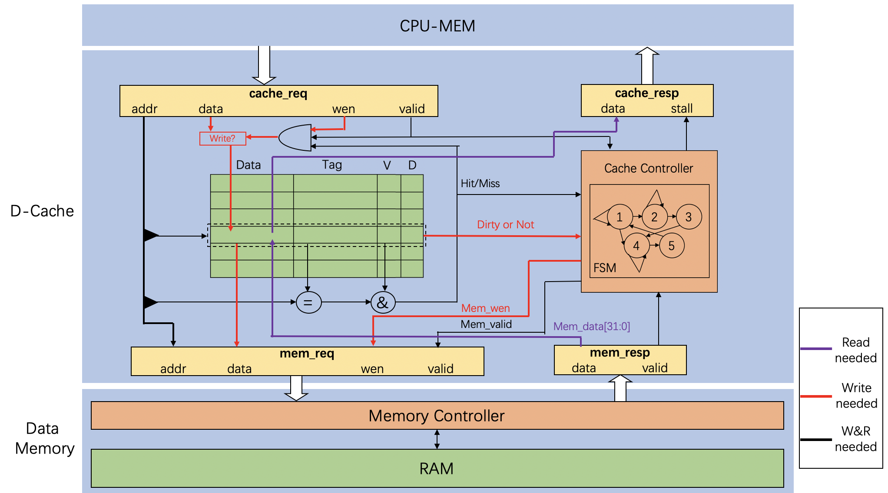
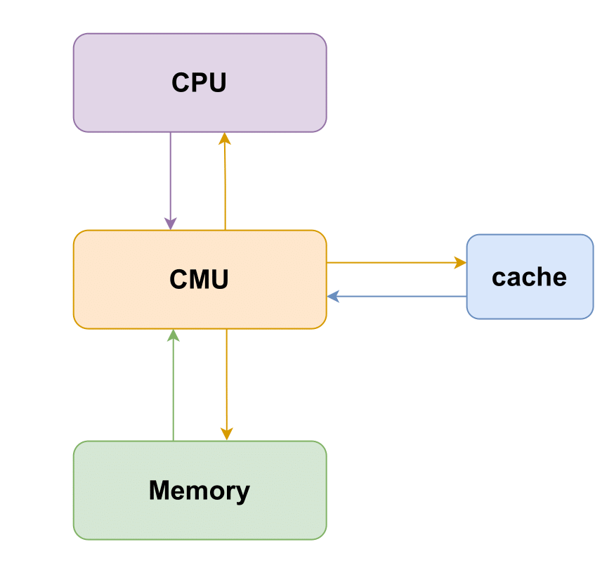
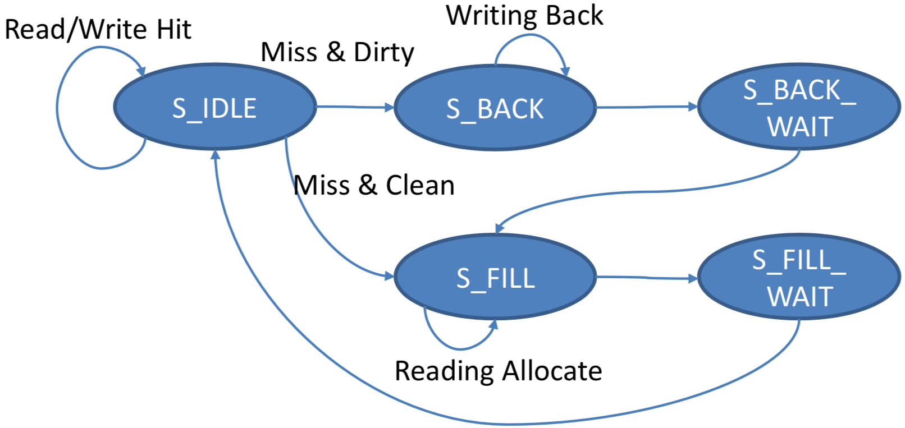
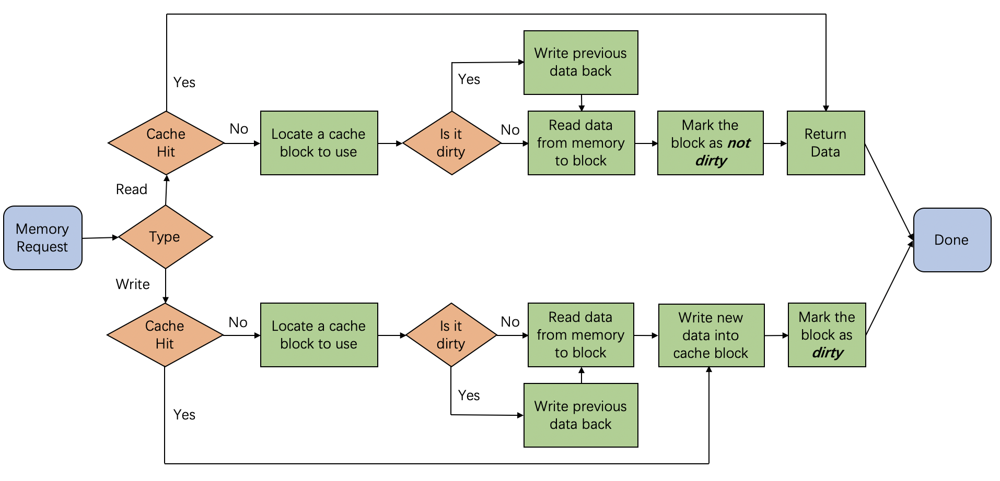
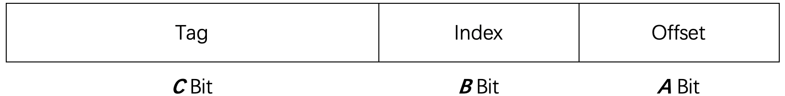

实验 2：Cache
1. 实验目的
- 理解cache在CPU中的作用。
- 了解cache与流水线和内存的交互机制。
- 理解存储层次（Memory Hierarchy）。
2. 实验环境
- HDL： Verilog。
- IDE： Vivado。
- 开发板： Nexys A7。
3. 实验原理
3.1 Cache模块
Cache作为CPU和内存之间的存储结构，能够利用其速度快、容量小的特点，在速度相差较大的两种硬件之间，起到协调两者数据传输速度差异的作用，是CPU存储层次中的重要组件。
对于整个Cache模块的结构和功能，下图以D-Cache为例给出一种参考设计，总体来说Cache内部可以再细分至控制模块（橙色）和存储模块（绿色）两个子模块。控制模块负责维护用于管理Cache状态的有限状态机，同时对Cache同上层CPU与下层Memory的交互起到调控作用。存储模块中则是Cache中存储的实际内容，一般为了保证Cache功能的正确实现，每个Block还需要辅助Tag（地址高位）、V（有效位）、D（脏数据）等信息进行管理。

附表中给出了一个cache模块接口的列表，对各信号的功能和位宽进行了说明，在实现中可参考此表根据流水线的功能和需求进行设计和调整。对于I-Cache，本次实验中不考虑写指令的情况，因此只选取D-Cache中的"读通路"部分即可完成相应实现。
3.2 Cache控制逻辑
Cache的基本结构、映射方式以及写策略等方面的内容在理论课程中已有详细的描述，但在实际实现中，cache的复杂行为一般由专门的控制模块进行管理，被称作CMU。CMU实质上是把cache中的状态机部分与CPU和Memory的交互部分独立出来，作为一个控制单元，控制数据的处理，CMU基本的架构与交互模式如下图所示。

对于CMU的控制逻辑，一般可以采用状态机的模式来管理，下图给出了一种可行的状态机类型。该状态机针对Write-Back策略进行实现，将Cache的行为归纳为5个状态，各个状态的功能为描述如下：
- S_IDLE：cache正常读写，即Load/Store命中或者未使用Cache。
- S_BACK：发生cache Miss，且被替换块中存在脏数，此时需要对脏数据先进行写回。
- S_BACK_WAIT：写回等待阶段，完成后自动跳转至S_FILL状态。
- S_FILL：发生Cache Miss或者写回已经完成，目标位置上不存在脏数据，可以直接从Memory中取回数据进行替换。
- S_FILL_WAIT：填充等待阶段，完成后表示目标数据已经加载到Cache中，自动跳转至S_IDLE状态。

上述状态要遵循的基本逻辑流程与下图相同。总体来说，Cache处理的事务主要包括：读、写、替换。

4. 实验要求和步骤
4.1 实验要求
关于cache读/写策略可以参考这里：
关于cache替换策略可以参考这里：
4.1.1 使用原创架构
- 功能要求：在Lab 1的工程基础上，创建新的模块完成本次实验，本次实验要求实现I-Cache和D-Cache两个模块，每个Cache的基本要求为：直接映射，write-back策略，write-allocate策略。Block中数据块大小为1 word（4B），单个Cache总大小512B；内存基本要求：两个8KB的BRAM，采用哈佛架构，指令内存和数据内存相互独立，均从0x0开始编址。
- 实现要求：在实现中cache存储单元可以使用寄存器堆或者生成IP核Block RAM进行构建，内存模块请修改传入的
mem_clk的值调整为CPU周期的八倍，以达到分频延时的目的，也可使用所提供的增加了分频时钟的内存模块LatencyMemory。
4.1.2 使用给定架构
- cache要求使用write-back和write-allocate策略
- CMU要求使用LRU策略
4.2 实验步骤
4.2.1 使用原创架构
- 基于lab1的实现，添加相应的cache模块。
- 进行cache内部交互逻辑的实现。
- 该部分逻辑可分为与流水线的交互和与内存的交互两个方面，需要考虑各自的交互关系。Cache的访存可能会对流水线的时序正确性产生影响，需要利用Stall机制保证流水线功能的正确性。较为简单的处理方法为：约定在访存完成前 MEM 段之前的流水段必须被 stall，如果遇到访存延迟与数据冒险在流水线内同时发生的情况，还需根据设计的流水线对处理优先级进行规定，相关设计请在报告中详细描述。
- 如果感觉一步完成实现较困难的话，可以分步进行实现。例如，在cache模块中，可以先实现一个仅包含一个寄存器的存储模块，在此基础上实现cache的控制与交互逻辑；在上一步的基础上，再实现更大的缓存模块。另外，在实验过程中可以先实现一个较为简单的I-Cache，然后在此基础上添加功能以实现D-Cache。
- 在缓存模块以及访问内存时，需要注意Block RAM的访问时一般会有一个周期的延迟。
- 进行仿真与上板测试。
4.2.2 使用给定机构
- 理解所给代码框架的cache和CMU模块
- 补全cache和CMU模块的代码
- 在给定的SoC中，加入自己的CPU，通过仿真测试和上板验证
4.3 验收要求
4.3.1 使用原创架构
CPU应能够正确运行所提供的汇编文件lab2.asm，该汇编文件包含三个测试点，验收时会查看每个测试点所对应的关键现象，根据数码管上的寄存器值和cache line的内容进行验证，并按测试点进行打分。验收时具体评分标准为：
| 通过测试点数目 | 1 | 2 | 3 |
|---|---|---|---|
| 所获验收成绩比例 | 60% | 80% | 100% |
对数码管显示要求具体如下表：
| 变量名 | switch[14:12] | 内容描述 |
|---|---|---|
| chip_debug_out0 | 2'b100 | 输出PC值 |
| chip_debug_out1 | 2'b101 | 输出某个寄存器（32个寄存器之一）的值 地址由 switch[11:7] 控制 |
| chip_debug_out2 | 2'b110 | 输出某条cache line的数据内容 cache line地址（即index）由开关低位控制 |
| chip_debug_out3 | 2'b111 | 输出某条cache line的非数据内容，包括D、V、Tag、Index cache line地址（即index）由开关低位控制 |
4.3.2 使用给定的架构
4.3.2.1 仿真验证
-
本次实验有两个仿真，一个仅用于仿真CMU 和Cache 模块，对应于
code/cache/sim/sim_top.v；另一个用于仿真完整的CPU，对应于code/sim/core_sim.v -
前者会仿真一些访存操作，后者则和以往一样，运行简单的测试程序。
-
推荐先对模块仿真，然后再对整体仿真。
-
若想要仿真CMU和Cache模块，在Sources 中的Simulation Sources目录中右键sim_1选择运行仿真；若仿真完整CPU，则在sim_2上右键运行仿真
-
如果想先熟悉下正确的测试结果，可以先把Cache 去掉，使用旧版内存，具体操作为：将RV32Core 的CMU 和RAM 注释掉，同时把下方“RAM_B data_ram ...”的注释打开，最后把cmu_stall 置为0（重新使用Cache 时记得恢复）。

4.3.2.2 上板验证
NEXYS A7 支持打印调试信息，以下为使用说明：
- 串口的连接和通信，以及在电脑显示输出的方法上次实验已经介绍，不再赘述
- 使用时需要把SW8拉高并开启单步调试模式（SW0）
- 每执行一步会输出一次调试信息，包括寄存器值、WB 阶段的PC 和指令，以及访存的地址和结果，如下图所示

- 如果想用以前的方法，即通过数码管查看其他信号值，将SW8拉低即可
- 如果想添加别的信号，可查看code/auxillary/debug_ctrl.v并根据注释添加
5. 思考题
-
给出本实验给定要求下地址分割情况简图，要求有简要的计算过程，简图如下图所示。
-
请分析本实验的测试代码中每条访存指令的命中/缺失情况，如果发生缺失，请判断其缓存缺失的类别。
-
在实验报告分别展示缓存命中、不命中的波形，分析时延差异。

（第一题图）
6. 附表
原创架构Cache接口参考
| 接口名 | 对接模块 | 输入/输出 | 位宽 | 意义 |
|---|---|---|---|---|
clk |
Pipeline | Input | 1 | 时钟信号 |
rst |
Pipeline | Input | 1 | 复位信号 |
cache_req_addr |
Pipeline | Input | 32 | 流水线发出的读/写地址 |
cache_req_data |
Pipeline | Input | 32 | 写入数据 |
cache_req_wen |
Pipeline | Input | 1 | cache写使能 |
cache_req_valid |
Pipeline | Input | 1 | 发往cache的读写请求的有效性 |
cache_resp_data |
Pipeline | Output | 32 | 向流水线提交的数据内容 |
cache_resp_stall |
Pipeline | Output | 1 | 流水线是否需要继续Stall |
mem_req_addr |
Memory | Output | 32 | 发往Memory的读/写地址 |
mem_req_data |
Memory | Output | 32 | 发往Memory写入数据 |
mem_req_wen |
Memory | Output | 1 | Memory写使能 |
mem_req_valid |
Memory | Output | 1 | 发往Memory的读写请求的有效性 |
mem_resp_data |
Memory | Input | 32 | 内存返回数据 |
mem_resp_valid |
Memory | Input | 1 | Memory数据查询完成 |